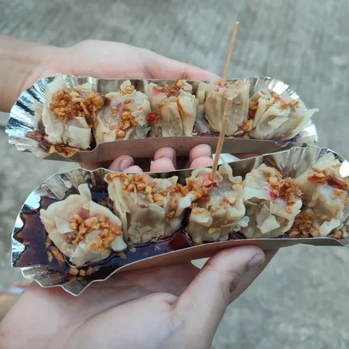

Siomai

Description
Siomai is a steamed dumpling originating from Chinese cuisine, widely popular across Southeast Asia and the Philippines, often served as a dim sum snack or light meal.
Ingredients
- pork
- beef
- wrapper
- chili sauce
- soy sauce/li>
- toothpick
Steps and Prep
- Mince the carrot, onion, mushrooms, and shrimp. Place all minced ingredients in a large mixing bowl
- Add the ground pork, sesame oil, salt, pepper, and egg. Mix until all ingredients are well blended
- Scoop 1 to 1.5 tablespoons of the mixture and place it in the center of a wonton wrapper.
- Using your thumb and index finger, gather the edges of the wrapper around the filling, pleating as you go, while leaving the top open
- SSteam over boiling water for 20 to 25 minutes, or until the filling is cooked through and the wrappers are translucent and tender